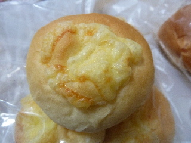
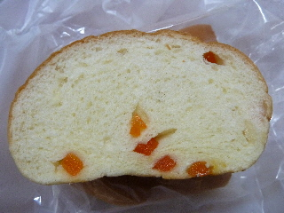
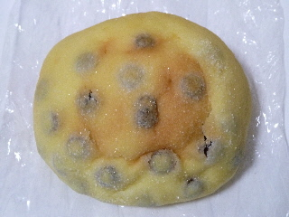

八雲パンのチーズパン
2011/12/05
中には小さい角切りのチーズが沢山入ってました。

チーズいっぱいのチーズパンはいいですね。
シンプルですけど、チーズとパンに組み合わせはいいですよね。
大社のエルや移動販売車で売っています。
2011/12/05
中には小さい角切りのチーズが沢山入ってました。

チーズいっぱいのチーズパンはいいですね。
シンプルですけど、チーズとパンに組み合わせはいいですよね。
2011/12/05
ニンジンの粒が入ったニンジンパンです。

ニンジン独特な甘さや苦みがあるのかなと思ったら、とっても甘かったです。
ドライフルーツ入りのパンみたいでした。
私は人参が嫌いじゃないので強くは言えないですが、人参嫌いな人でも食べれるんじゃないでしょうか。
あと、パンがスライスして販売してるのも食べやすくていいなって思いました。
2011/05/30
大社にあるショッピングセンターエル内のパン屋さんコンセルボ大社店のパンが移動パン屋さんで販売していました。
*ごめんなさい。コンセルボさんじゃなくて八雲パンさんだったみたいです。

エルに買い物に行かないので、パン屋さんがあるってしりませんでした。
今度何かのついでがあったら、寄って買い物をしようと思いました。